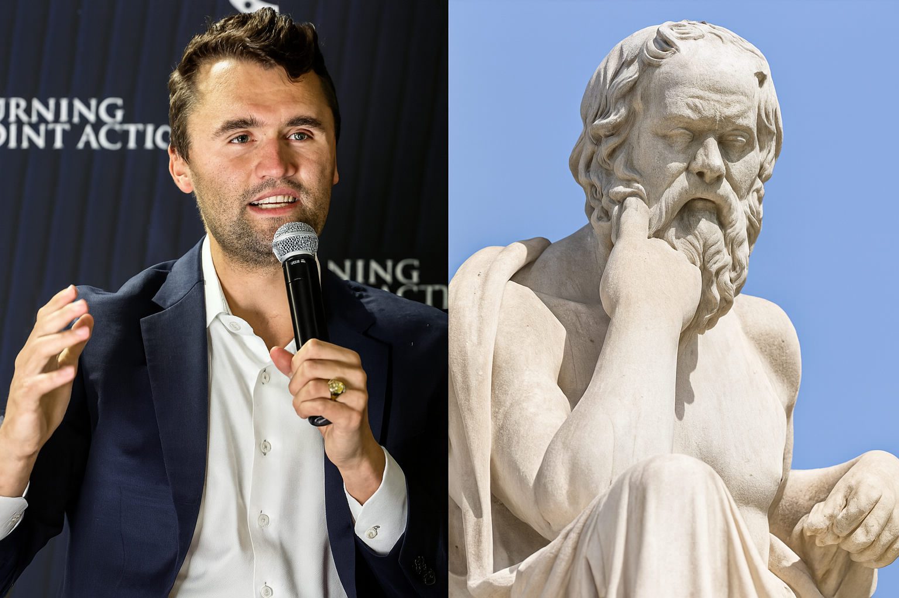

Edvard G.

Sokrat, stari grški filozof, je ostal znan po tem, da je z vprašanji iskal resnico in izzival ljudi k razmisleku. Ni se bal govoriti proti oblasti, čeprav ga je to na koncu stalo življenja. V današnjem času so se podobne lastnosti kazale pri Charliju Kirku.
Sokrat je verjel, da lahko svobodno govorimo, če hočemo priti do resnice. Charlie Kirk, ustanovitelj organizacije Turning Point USA, je podobno zagovarjal svobodo govora, in jo širil med študenti na univerzah. Z geslom “Dokaži mi, da se motim” je spodbujal odprte razprave in pozival mlade k razmišljanju - podobno kot je Sokrat izzival mlade Atence.
Sokrat ni podajal gotovih resnic, ampak je spraševal. S svojimi vprašanji je razkril, kako malo pravzaprav vemo. Kirk je uporabljal podoben pristop. Postavljal je vprašanja, izzival sogovornike in jih pozival, naj pojasnijo svoja stališča. Čeprav ni bil filozof v pravem pomenu besede, je njegova retorika temeljila na dialogu.
Sokrat je sprejel svojo usodo z dostojanstvom in pokazal pogum. Kirk se prav tako ni ustrašil nastopanja v sovražnih okoljih, čeprav se je zavedal nevarnosti. Njegova pripravljenost, da se izpostavi kritikam in celo nasilju, spominja na sokratski pogum.
Sokrat je menil, da naj vodijo modri in pravični ljudje, ne tisti z denarjem ali zvezami. Kirk je zagovarjal podobno idejo; meritokracijo. Kar pomeni, da si uspeh zaslužimo z delom in sposobnostmi. Oba verjameta, da je vsak človek odgovoren za svojo pot v življenju.
Za Sokrata je bila resnica ključ do duhovne svobode. Kirk je poudarjal, da je razumevanje resnice potrebno za svobodno družbo. Oba sta verjela, da nas resnica osvobaja, tako kot posameznike kakor tudi celotno družbo.
Charlie Kirk je bil globoko veren. Krščansko vero je razumel kot temelj morale. Verjel je, da vera postavlja človeka v odnos z Bogom in mu pomaga ločiti dobro od slabega. Brez vere postane človek sam sebi merilo, kar lahko vodi v moralni relativizem, kjer ni več jasnih vrednot.
"Brez Boga postane človek bog, in to je začetek tiranije.", Charlie Kirk
Sokrat, čeprav ni bil vernik v današnjem pomenu, je prav tako verjel v višji red, ki presega človeške zakone. Njegova filozofija je temeljila na prepričanju, da obstaja objektivna resnica. Ko je bil obsojen na smrt, ni pobegnil, ampak je sprejel kazen, ker je verjel, da je spoštovanje pravičnosti pomembnejše od lastnega življenja.
Charlie Kirk morda ni bil filozof v akademskem smislu, vendar njegovi javni nastopi, pogum in moralno jasnost lahko primerjamo s Sokratom. V času, ko je svoboda govora pogosto ogrožena, je Kirk deloval kot sodobni izzivalec, ki verjame, da je resnica vredna tveganja. Njegova pot ni bila brez kontroverz, a prav to je značilno za vse, ki se odločijo braniti resnico.
Sokrat je bil leta 399 pr. n. št. obsojen na smrt zaradi “kvarjenja mladine” in “nespoštovanja bogov”. Namesto pobega je sprejel kazen iz spoštovanja do atenskih zakonov. Umrl je mirno, potem ko je spil strupeno čašo s cikuto, obdan s prijatelji.
Charlie Kirk je bil 10. septembra 2025 smrtno ranjen med javnim nastopom na univerzi Utah Valley. Med odgovarjanjem na vprašanja občinstva ga je strelec smrtno ranil z razdalje 180 metrov
"Svoboda govora ni le pravica - je odgovornost." Charlie Kirk
Charles Kirk, tvoje odlične razprave, iskrive misli in spoštljiv odnos do sogovornikov bom neizmerno pogrešal. Bil si glas razuma v času zmede, pogumen iskalec resnice in neomajen zagovornik svobode. Pustil si neizbrisno sled v spominu vseh, ki smo te poznali.
RIP Charlie. Naj ti bo lahka zemlja.,
Edvard G.